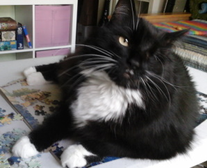

Lifelong Learner
If I thought I knew everything I would obviously know nothing.
| About Me: | I was born in San Diego, CA and now reside in Seattle, WA. |
| Interests: | I like sweet coffee and vintage TV like Golden Girls and M*A*S*H. I don't like chocolate, anime, or jazz music. I write fiction under various pennames and play the bagpipes badly. |
| Pet: Chessie |  |